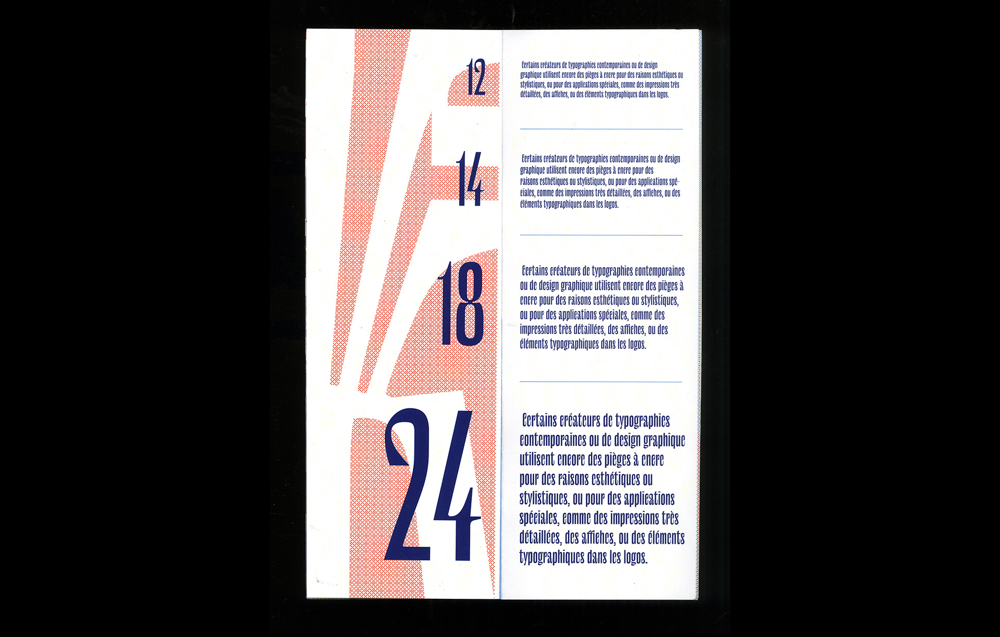
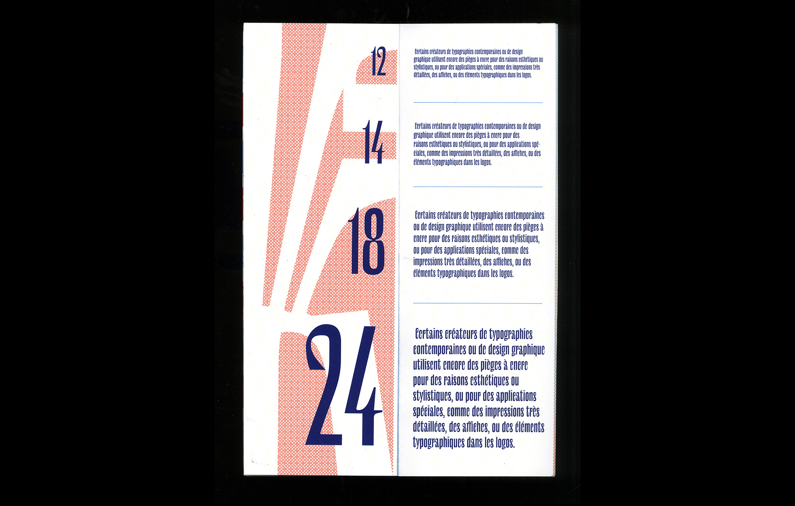
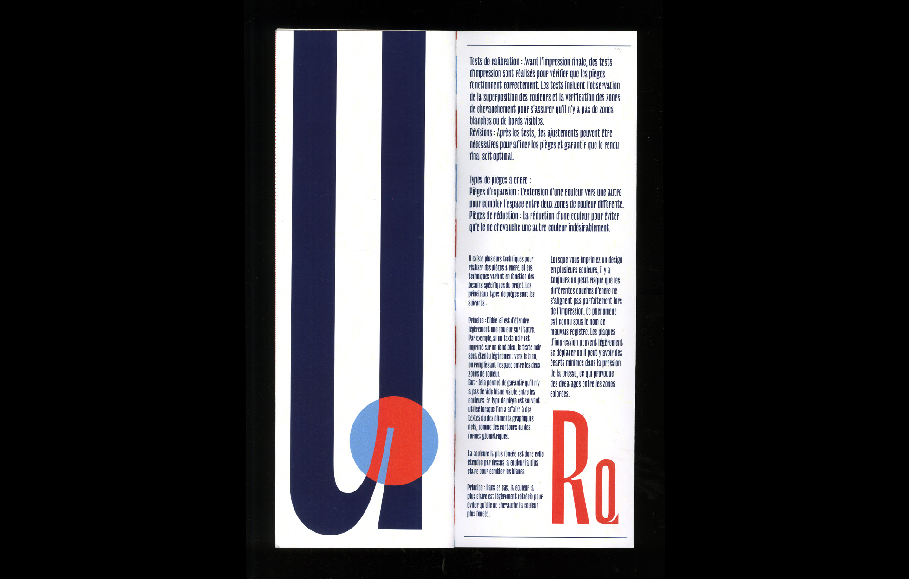
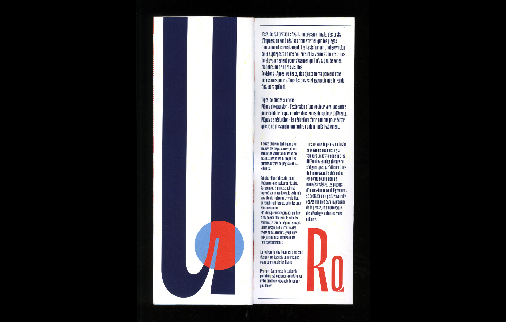

Ce projet se divise en deux éditions, la première est un spécimen construit autour de la police d'écriture "Le Murmure" de la fonderie Velvetyne, la deuxième éditions est uniquement iconographique, et mets en avant les caractéristiques, les inspiration et les potentiels de cette police.
 

 
